Java
Setting Up Java Development Environment
Step 1: Install Java Development Kit (JDK):
Visit the official Oracle
website or OpenJDK
website to download the latest version of JDK.
Follow the installation instructions for your operating system (Windows, macOS, or Linux).
After installation, open a terminal or command prompt and type java -version to ensure it's
installed correctly.
Step 2: Choose a Text Editor:
Select a simple text editor to write your Java code. Notepad (Windows), TextEdit (macOS), or
gedit (Linux) are good choices. For a more feature-rich option, consider Visual Studio
Code or IntelliJ IDEA Community Edition.
Step 3: Write Your First Java Program:
Create a new file with a .java extension, like
HelloWorld.java. Open it in your chosen text editor and write a simple
program:
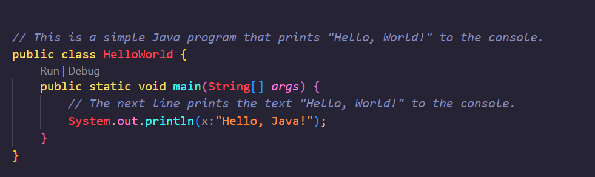
Save the file.
Step 4: Compile and Run Your Program:
Open a terminal or command prompt.
Navigate to the directory where your HelloWorld.java file is saved using the
cd command.
Compile the program by typing: javac HelloWorld.java.
If there are no errors, run the program with: java HelloWorld. You should
see "Hello, Java!" printed on the screen.
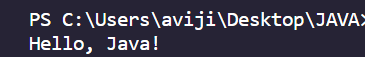
Save the file.
Understanding Compile Time in Java
When we write a Java program, it doesn't directly talk to the computer. Instead, we have a special
friend called the Java Compiler that helps us.
1. Writing the Recipe (Java Code):
Think of your Java program as a magical recipe. You tell the computer what to do by writing down the
steps in a language it understands.
public class HelloWorld {
public static void main(String[] args) {
System.out.println("Abracadabra! I'm a Java magician!");
}
}
2. Spell Check (Compile Time):
Before we can use our magic recipe, we need to make sure it's written correctly. This step is like a
spell check for our code. The Java Compiler looks at our recipe and makes sure everything is in the
right order and follows the magical rules of Java.
3. Creating a Magic Scroll (Bytecode):
Once the Java Compiler is happy with our recipe, it transforms it into a special kind of language
that the computer understands. This special language is called bytecode. It's like
creating a magic scroll that the computer can read.
4. Ready for the Magic Show (Running the Program):
Now, our magical recipe is ready to perform! We can give the magic scroll (bytecode) to the
computer, and it will follow the instructions we wrote. This is when the actual magic happens, and
our program comes to life!
Real-World Analogy: Baking a Cake
Imagine you want to bake a delicious cake. Here's how the process relates to Java Compile
Time:
Writing the Recipe (Java Code): You jot down the ingredients and steps in
a recipe book.
Spell Check (Compile Time): Before you start baking, you double-check your
recipe to make sure there are no mistakes.
Creating a Recipe Card (Bytecode): Once everything looks good, you create
a recipe card that's easy for others to read.
Ready for Baking (Running the Program): With your recipe card, you can now
bake the cake and enjoy the delicious results!
Keywords and in Java
Keywords are special words in Java that have specific meanings. They are like magic
spells that tell the computer to do something special. But beware, you can't use these words for
your own creations; they are reserved for the computer's language. Here are a few examples:
class: Like a blueprint for creating something.
public: Everyone can see and use it.
static: Belongs to the class itself, not instances.
void: Represents the absence of a specific type.
if, else: Helps the computer make decisions.
Identifiers and in Java
Identifiers are like names we give to things in our program. It could be a name for
a variable, a class, or a method. Identifiers follow some rules:
1. Must start with a letter or an underscore (_).
2. Can include letters, numbers, or underscores after the first character.
3. Cannot be a Java keyword.
Examples:
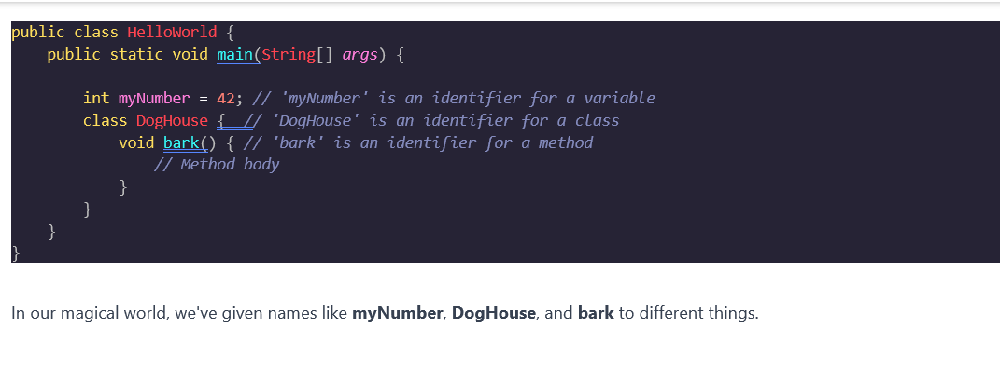
Real-World Analogy: Baking a Cake
Think of your Java program as a magical recipe book. Keywords are like specific instructions written
in a magical language only the computer understands. Identifiers are the names you give to different
magical ingredients and steps in the recipe.
Know more...
Variables in Java
What are Variables?
In Java, a variable is a named storage location that can hold a value. It's like a
magical jar with a label that allows us to refer to and manipulate specific pieces of data in our
programs.
Declaring Variables:
To create a variable, we use a process called declaring. This involves specifying
the variable's name and its data type.
Syntax:
dataType variableName;
Example:
let's delve into the world of Java variables using the exciting realm of cricket. Variables are like
players on the field, each with a specific role and contribution. Let's score some runs and
understand how variables work in Java!
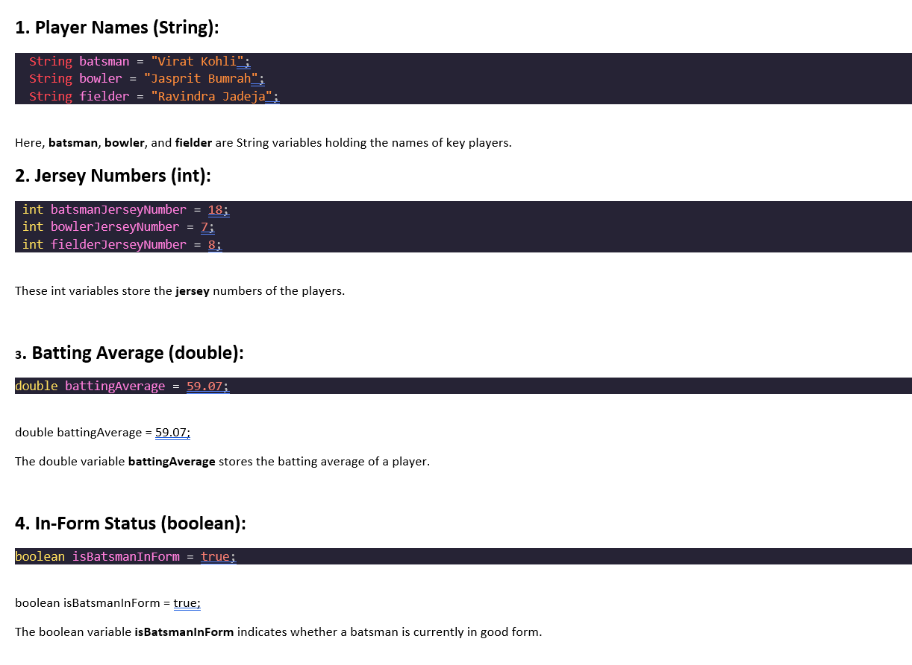
Real-World Analogy:
Imagine you are the captain of a cricket team (Java program), and each player (variable) has a
specific role. The player's name, jersey number, batting average, and in-form status are like
attributes associated with each variable. You can dynamically change these values as the game
progresses.
Know more...
Data Types in Java
Java is statically typed and also a strongly typed language because, in
Java, each type of data (such as integer, character, hexadecimal, packed decimal, and so forth) is
predefined as part of the programming language and all constants or variables defined for a given
program must be described with one of the data types.
There are two data types available in Java.
Diagram:

Primitive Data Type:
Primitive data are only single values and have no special capabilities. Primitive data are
allready predefine in our programming language. Some Primitive data types are,
byte:
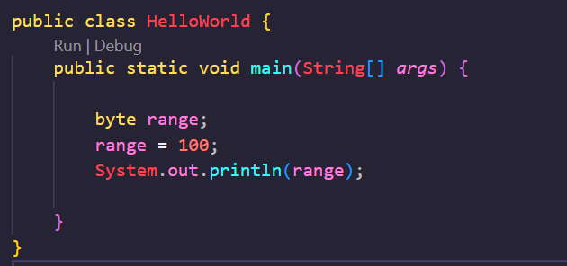
short:
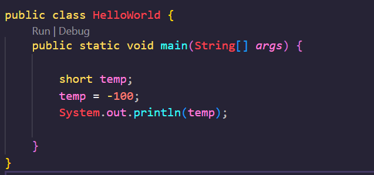
int:
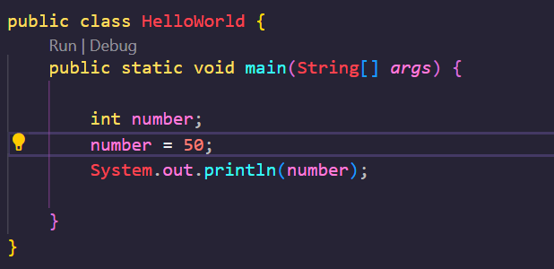
long:

float:
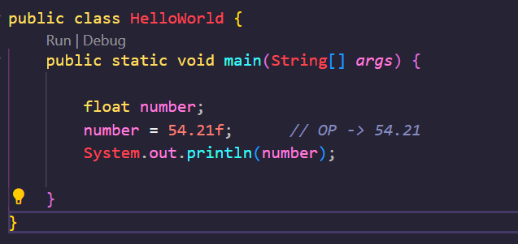
double:
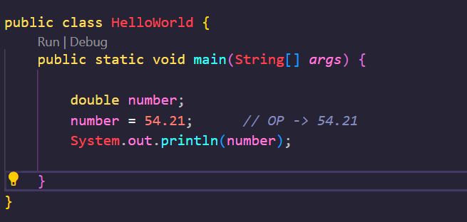
boolean:
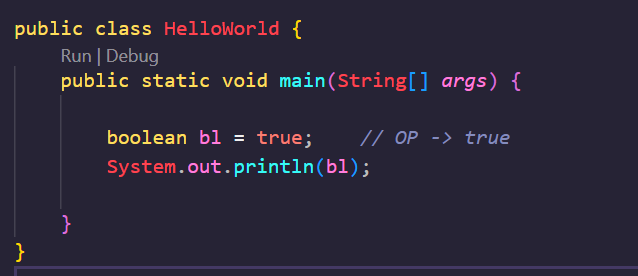
char:
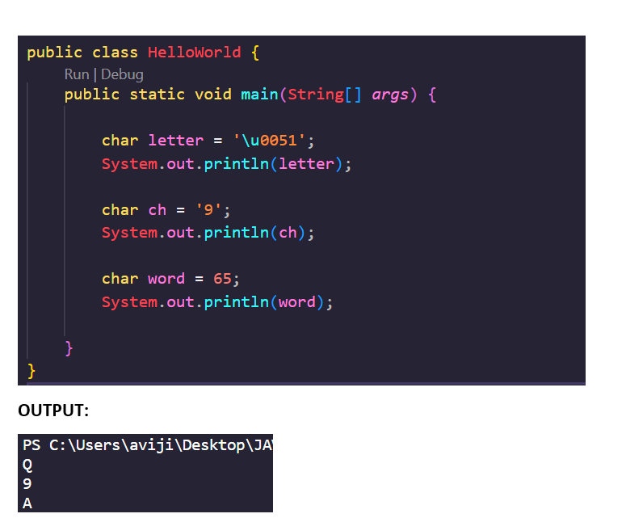
Non Primitive Data Type:
The Reference Data Types will contain a memory address of variable values because the
reference types won’t store the variable value directly in memory. They are strings,
objects, arrays, etc.
Arrays:
Arrays in Java are like cricket teams, where each player represents a value in the array. They
allow you to group multiple values under a single name.
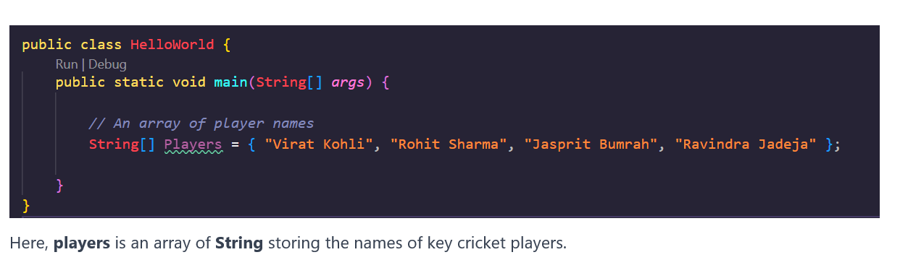
Objects:
Objects are like comprehensive player profiles in cricket. They encapsulate multiple pieces
of
information about a single entity.
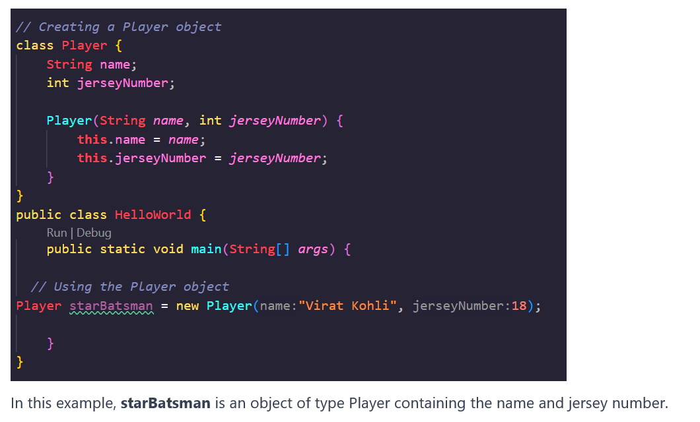
Know more...